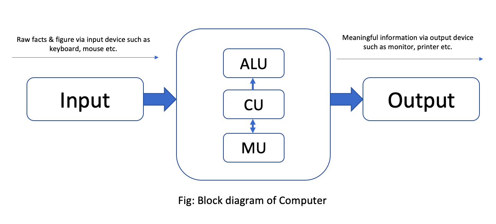

Chapter 1: Computer System
A computer system is a combination of hardware and software that works together to perform various tasks. It includes components like the CPU, memory, input/output devices, and storage systems. Understanding how these components work is essential for becoming proficient in computer science.
Computer is an electronic device device derived from the Latin word "computere" which means to calculate. It accepts raw facts and figures as an input which are isolated and uninterpreted through input device, process it according to the requirement of the user or command supplied by the user, store it before and after processing of require and produce a meaningful information as an output through an output device. Generally, computer works on IPO (Input-Process-Output) cycle. It follows GIGO (Garbage In Garbage Out) algorithm which means the output is always based on the input supplied by the user. The basic operation of computer is illustrated by following block diagram.
Key Components of a Computer System:
- CPU: The central processing unit is the brain of the computer.
- RAM: Random Access Memory is where data is temporarily stored for fast access.
- Storage: Hard Drives or SSDs store data permanently.
- Input Devices: Keyboards, mice, and other devices through which the user interacts with the computer.
- Output Devices: Monitors, printers, etc. that present information to the user.
Some characteristics/features of computer:
- Accuracy: Computer are the accurate machine that means result produced by computer are 100% accurate. Since, it follows GIGO. The error that may arise in output is due to human not by a computer.
- Speed: Computer works on tremendously high speed. The operating speed of computer are measured in millisecond, microsecond, picosecond and nanosecond which means computer can perform millions and billions of instruction per second.
- Storage: It is the area or unit which is capable of storing data and information for present and future use. Storing data allows users to retrieve it whenever required. These days computer comes with high volume of memory which are measured in Megabyte (1024 KB) , Gigabyte (1024 MB), Terabyte(1024 GB) and Petabyte(1024 TB).
- Versatility: Computer are generally design to serve more than one type of work. The implementation of computer are not only limited to specific purpose, they solve general requirement of the user and can be used in more than 1 type of job./li>
- Diligence: The feature of computer in which computer doesn't get tired even after working for long period of time. Computer can perform any number of task continuously until it is accomplished. Once the instruction is given computer follows the command till it gets terminated.
Applications/Implementations/Uses of computer:
- Education:Nowadays, computer are highly used in teaching and learning process. Many interesting graphics can be made and provided for easy learning. Also, computer provide features of internet which make learning easy and fun.
- Communication:Computer is massively used in communication. Communication is done by e-mail, chat, online conferencing. e-fax etc with help of internet in computer. It has made the communication faster, easier and cheaper.
- Business: In business sector, computer are used to generate invoice, maintain stock and make statistical analysis. E-commerce is the new and emerging way of buying and selling goods and service through used of electronic means and media.
- Engineering:Scientific and engineering design requires complex and massive computations. Design of bridges, towers, buildings, generators, motors, electrical transmission etc requires precise computation which are done through computers.
- Science
- Military
- Industry
- Robotics
- Transportation